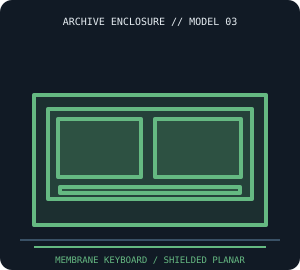

[ IDENTIFIED SYSTEM // ATARI 400 ]
Atari 400 Home Computer Enclosure
Low-profile keyboard computer with an approximate 13.4 × 11.0 × 3.5 in (W × D × H) molded enclosure and edge-key membrane keyboard.

MODEL / REVISION BOUNDARY: Early and later 400 boards and shield assemblies differ; confirm board revision and the keyboard membrane style. Do not assume an Atari 800 case or keyboard is interchangeable.
Enclosure specifications
| Exact model / generation | Atari 400 home computer (1979 production model; distinguish original and later motherboard/shield revisions). |
|---|---|
| External dimensions | Approximately 13.4 × 11.0 × 3.5 in (W × D × H); reported shell dimensions, not including the power adapter, RF lead or attached peripherals. |
| Form factor / board layout | Integrated keyboard-console desktop; one-piece molded upper shell over a metal shield and model-specific Atari main board. No PC motherboard standard. |
| Proprietary power supply | External Atari 9-VAC transformer; the computer has no ATX supply. Use the correct AC-output rating/connector and region-rated transformer, not a DC adapter. |
| External bays / ports | No drive bays. External storage and peripherals attach through Atari SIO and cartridge ports; they remain separate enclosures. |
| Internal bays / mounts | No standard internal bay; stock case has board and RF-shield space only. Disk drives are external peripherals. |
| Service / compatibility | The 400/800 field-service manual covers common circuitry but case, keyboard, shield and board revisions must be checked against the individual unit. Avoid stressing brittle keyboard tabs and membrane tail. |
| Revision identification | Early and later 400 boards and shield assemblies differ; confirm board revision and the keyboard membrane style. Do not assume an Atari 800 case or keyboard is interchangeable. |
Service, restoration & fit notes
The 400/800 field-service manual covers common circuitry but case, keyboard, shield and board revisions must be checked against the individual unit. Avoid stressing brittle keyboard tabs and membrane tail.
External Atari 9-VAC transformer; the computer has no ATX supply. Use the correct AC-output rating/connector and region-rated transformer, not a DC adapter.
- Record the full model/type label, board and power-supply assembly numbers, drive labels and manual revision before disassembly.
- Preserve original shields, brackets, hinges, feet, keyboard/CRT harnesses and proprietary fasteners with this exact enclosure; do not assume contemporary PC standards apply.
- Dimensions are approximate where noted; measure the actual specimen and leave clearance for cables, vents, lids/handles and attached peripherals.
Manufacturer & archival manual citations
- Atari 400/800 Home Computer Field Service Manual — Internet ArchiveAtari field-service documentation for chassis, board and keyboard servicing.
- Atari 400 Home Computer Owner’s Manual — ManualsLib archival copyAtari original-model operator manual; check the field-service manual for repair procedures.
Manuals may cover only a stated revision or configuration; compare the title page and machine labels before applying procedures.